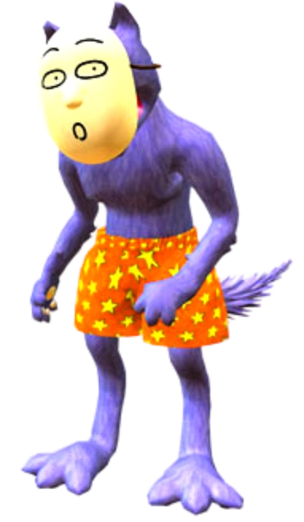

Oiee, vamos conhecer alguns personagens de Popee the Performer?
Kedamono:
Kedamono, pesonagem do seriado "Poppe the Performer", é um lobo antropomórfico de pelo roxo que usa cuecas laranja com uma estampa de estrelas amarelas na parte superior e uma máscara Noh
em constante mudança que combina com sua expressão atual (ou seja, sempre que sua expressão real muda, a máscara cai para revelar outra que reflete aquela).
O primeiro (e único) a ver seu rosto por baixo da máscara foi Frog , que afirma: " O rosto de Kedamono... parece o de sua mãe. "
Kedamono é uma figura silenciosa, sensível e passiva, frequentemente retratada como a vítima do comportamento violento e caótico de Popee, o outro protagonista da série. Kedamono é amigável,
se importa muito com os amigos e cuida deles.

Popee:
Com 1,65 m de altura, Popee tem cabelos loiros e olhos azuis-escuros. Por baixo do chapéu, Popee prende o cabelo em duas pequenas tranças. Ele usa um macacão listrado branco
e rosa/vermelho com um rabo de gato comprido, além de um chapéu de coelho rosa e uma mochila azul.
Popee parece ter um temperamento explosivo, é ciumento e tem uma personalidade insana ao longo da série. Ele quer ser melhor do que todos os outros no circo, como comprovado por mostrar
atos de ciúmes, por exemplo, em relação a Papi quando ele foi capaz de completar um truque que Popee não foi capaz de fazer com sucesso. É o mesmo com Kedamono, que sofre mais com suas
explosões violentas. No entanto, apesar da violência que ele direciona a ele, Popee não odeia Kedamono. Na verdade, ele se sente menos sozinho quando perto de Kedamono. Popee é egocêntrico,
mas também é solitário.